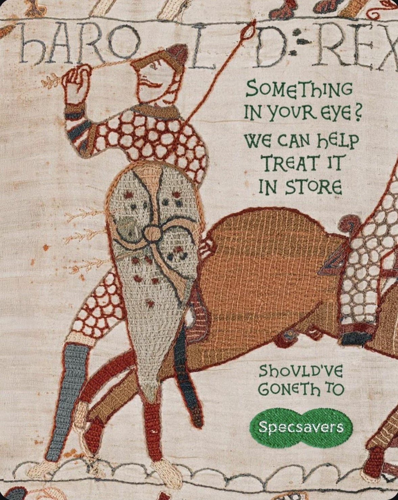

As I got on the Tube this morning, I thought about how to further optimise the space in our small flat. I thought about someone I am meeting later who's going through a hard time. I thought about all the people I haven't replied to on WhatsApp. I thought about the fact that our bathroom light is broken and I can't guarantee that all my eyeshadow is in the right place.
Why should I, or anyone navigating worse first-world problems, stop and read what you have to say just because you want my money? Much copy assumes the reader is already interested when they are absolutely not. And why would they be? Why would they listen to you over the hundred other people also trying to get their attention because you want their money? As a copywriter who has sought work via cold emailing, I think about this a lot.
Ed Papazian, of Media Dynamics, estimated that people are exposed to about 360 adverts a day, and that fewer than half of these ever register.1 That was in 2014 and didn't include billboards, in-store marketing and packaging. Since then, we gained TikTok and more unskippable YouTube ads.
In days of yore, books were written by hand, and Cambridge University Library had only 122 of them.2 Information travelled as fast as a horse or pamphlet peddler, and most people couldn't read anyway. Information was scarce. Now it overflows, and our consumption of it is bottlenecked by our attention.
"A wealth of information creates a poverty of attention",3 wrote the economist Herbert Simon in 1971, before the internet existed. Simon said that an information processing system isn't useful because of how much information it generates or processes, but "the crucial question is how much information it will allow to be withheld from the attention of other parts of the system… to be an attention conserver".
And yet, technology does the opposite. Google, Instagram, TikTok and YouTube are free because the users aren't the customers; the advertisers are. These services sell users' attention. This is why they use infamous algorithms to make the apps addictive. Attention is a currency. We may not pay them in cash, but we pay with our attention. Instead of paying money for YouTube Premium, I submit to letting ads play before every video. And my desire to learn some piano tricks is greater than the pain of watching someone fake-sigh in a Febreze advert.
Most advertising fails to acknowledge that it's barging into people's lives, attempting to steal attention, as Martin Weigel put it in his essay The Fracking of Attention, "with all the grace and social skills of a drunken boor gatecrashing a wedding party."4 I initially read this as "boar" rather than "boor" and think it captures the point better.5 Would you give your time and money to this drunken boar? I suspect not, unless you want to sabotage the wedding.

So what do I propose? As people's attention is scarce, it should be treated as a precious thing. The 1960s adman Howard Gossage believed that advertisers should treat the audience as people to be charmed and entertained and won over, the way a performer treats a crowd.6 It is a great privilege to have people's attention. It is an opportunity to make a connection, to make people laugh or smile if only for a moment.
I experienced a moment of levity amid my Tube journey anxiety. It was not a conversation, an in-person interaction, a podcast or my book that made me laugh. It was a Specsavers ad.

I don't need glasses, but if I did, I would go there.
The real fact of the matter is that nobody reads ads. People read what interests them, and sometimes it's an ad. — Howard Gossage7
Notes
- Media Dynamics, Inc. (2014) Adults spend almost 10 hours per day with the media, but note only 150 ads [Press release]. 22 September. Available at: mediadynamicsinc.com (Accessed: 2 October 2026).
- Cambridge University Library's online exhibition Lines of Thought, entry "Donors by 1424". Available at: exhibitions.lib.cam.ac.uk.
- Simon, H.A. (1971) 'Designing organizations for an information-rich world', in Greenberger, M. (ed.) Computers, Communications, and the Public Interest. Baltimore: Johns Hopkins Press, pp. 37–72.
- Weigel, M. (2015) 'The fracking of attention', Martin Weigel, 27 October. Available at: martinweigel.org (Accessed: 2 October 2026).
- It also reminds me of this headline: Boozy feral pig steals beer, gets drunk and starts fight with a cow.
- Harrison, S. (2012) 'Gossage: a man ahead of his time', Campaign. Available at: campaignlive.co.uk (Accessed: 2 October 2026).
- Gossage, H.L. (1986) Is There Any Hope for Advertising? Edited by K.B. Rotzoll, J. Graham and B. Mussey. Urbana: University of Illinois Press.